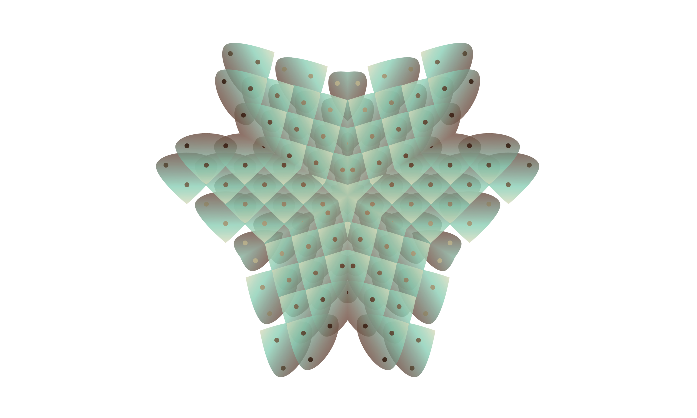

There's a growing consensus among the brightest neuroscientists of our generation that criticality and nonlinear emergence is the key to neuromorphic activity. Pure localizationism is dead, and meta-network theory is only the beginning.
Meanwhile, existing artificial neural networks cannot achieve both scalability and biological fidelity: the result is an absurd expenditure of compute cycles to achieve mediocre results outside of any but the most impoverished domains of intelligence. A hummingbird with a brain the size of a grain of rice navigates from Maine to the Yucatan, calculates windsheer and multiple flight trajectories in milliseconds within a tiny energy budget, while we're uniformly impressed with a chatbot built atop an enormous bruteforce lookup table.
There is another path here: the next wave of cognitive science will be more attuned to biological models, both more humble and more deeply ambitious. It will be welcoming of the insights of anthropology, psychology, ethology, and sociology on the one hand, while more profoundly informed by synergetics and thermodynamics on the other.
Neuromorphic is lead by T. Bartholomy, is a cognitive scientist focused on the frontier between computational neuroscience, machine learning, and cognitive psychology.
Engineering: I'm a former software engineer at Google. I approach the hard problems of the humanities with the precision and robust standards more commonly found in this field.
Psychoanalysis: I have postgraduate-level training within New York psychoanalytic circles, alongside years of clinical experience treating schizophrenic patients.
Anthropology: I've spent years in the field studying the ceremonial practices of the Lakota Sioux in South Dakota, the Hopi in New Mexico, the Huichol in Zacatecas, and the Shipibo of Peru.
Research: It requires a delicate balance of imagination, intellectual discipline, and experience to navigate the enormous unsorted sandpile of neuroscience, AI, and machine learning techniques without losing one's head. I've been doing this for years, and I can help you find the theory and empirical evidence you need.
Analysis: As my writing shows, I have the ability to distill and elucidate some of the most tangled areas of cognitive science. I help smart and motivated people articulate what they already understand but have not yet articulated.
Implementation: I spent years building scalable systems at Google, and I enjoy the challenge of putting good ideas to the test. Research, model, experiment, iterate.
If this interests you, contact me: bartholomy@neuromorphic.ooo

© hautogdoad, LLC